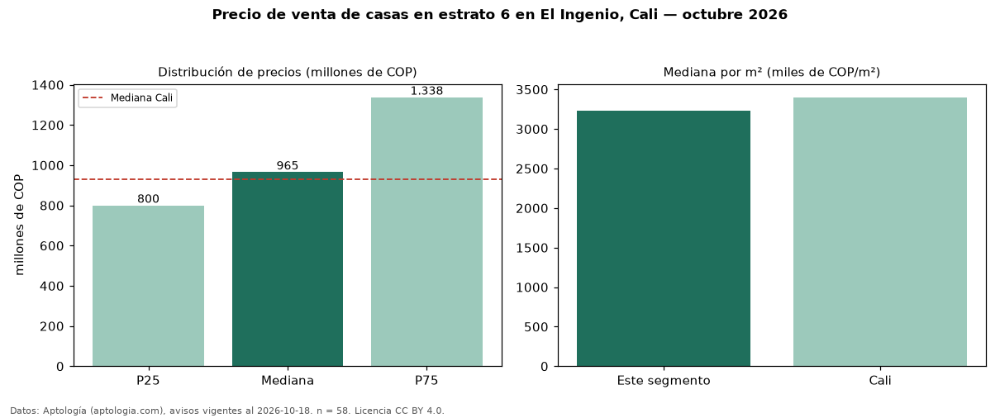

Precio de venta de casas en estrato 6 en El Ingenio, Cali — octubre 2026
En El Ingenio, Cali, la mediana de precio de venta de casas en estrato 6 es COP 965 millones, según 58 avisos vigentes. Frente a la mediana de toda la vivienda de estrato 6 de El Ingenio (COP 728 millones, n = 108), queda 33 % por encima; este segmento reúne el 54 % de esos avisos. Por metro cuadrado, la mediana es COP 3,23 millones/m² (n = 58), 19 % por debajo del conjunto de referencia (COP 3,98 millones/m²). El área mediana anunciada es 352 m². El segmento con más oferta es el de 3 o más habitaciones (58 avisos, mediana COP 965 millones). La administración mediana declarada es COP 800.000 al mes (n = 18). La mediana de todas las casas en venta de Cali es COP 930 millones (+4 % de diferencia). La mitad central de los avisos va de COP 800 millones a COP 1,34 mil millones (razón 1,7), una dispersión moderada. Datos: Aptología (aptologia.com), CC BY 4.0 — https://www.aptologia.com/casas-en-venta/cali/el-ingenio. Archivos: PDF, CSV con las cifras y gráfica PNG.

| Avisos únicos | 58 |
|---|---|
| Percentil 25 | COP 800.000.000 |
| Mediana | COP 965.000.000 |
| Percentil 75 | COP 1.337.500.000 |
| Mediana por m² | COP 3.233.796 |
Fuente: avisos vigentes de portales inmobiliarios recopilados por Aptología, deduplicados (mínimo 30 avisos únicos por celda). Precios pedidos, no cerrados. Fecha: 2026-10-18.